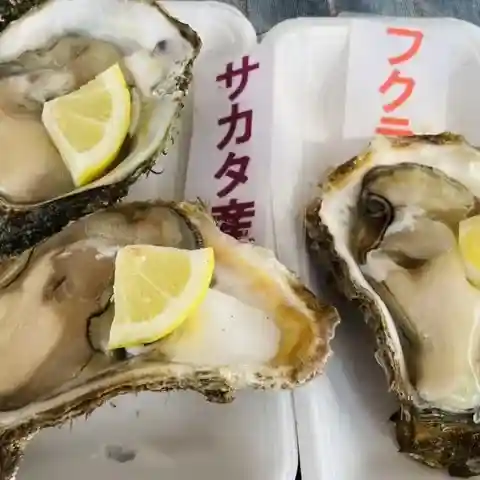
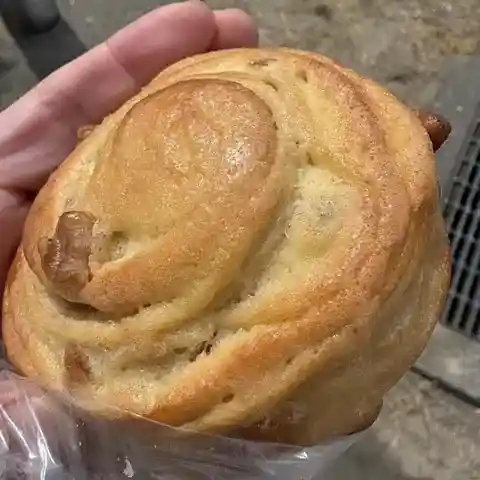
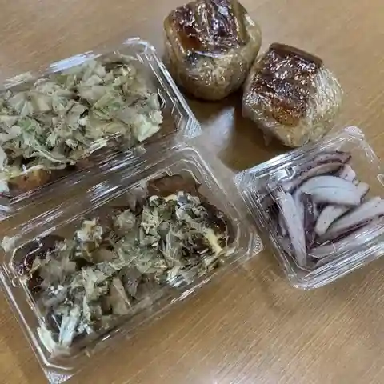
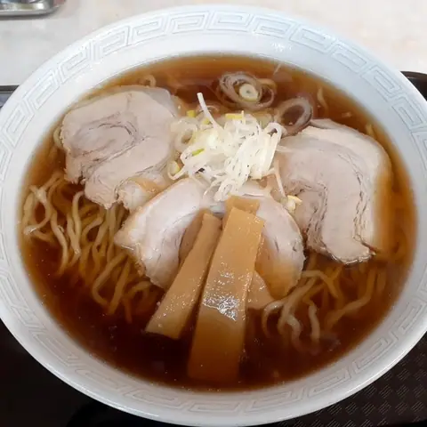
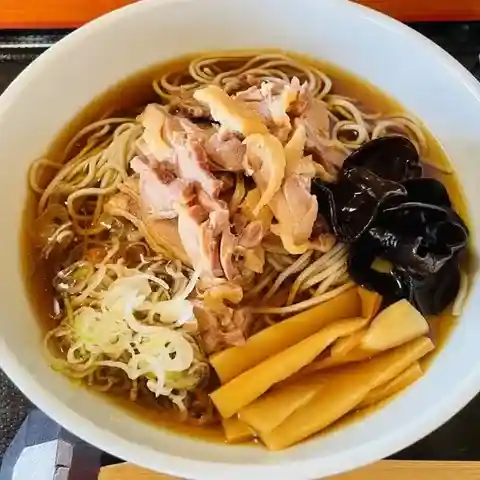
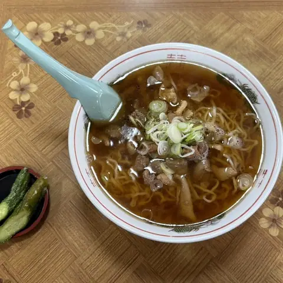
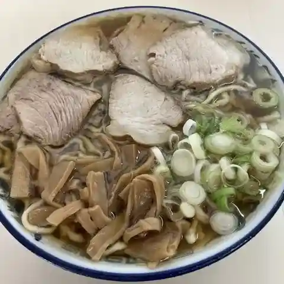
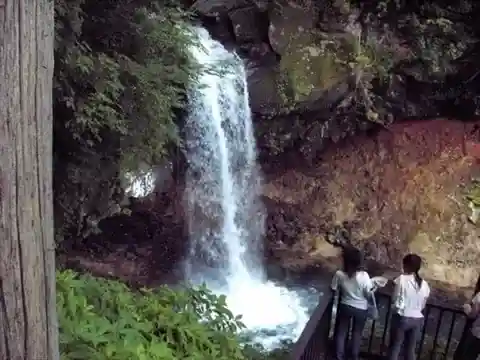

Yuza
Yuza · Yamagata
Yuza
Highlighted on the Yamagata map.

Stay
鳥海温泉 遊楽里

Choukai Onsen Yuuraku Sato
Onsen lodging in Yuza, Yamagata.
湯ノ田温泉 酒田屋旅館
Yu No Ta Onsen Sakata Ya Ryokan
Ryokan inn in Yuza, Yamagata.
Dining
中華そば 七郎

Chuuka Soba Shichirou
Ramen shop in Yuza, Yamagata.
ヤマサ鮮魚本店

Yamasa Sengyo Honten
Seafood restaurant in Yuza, Yamagata.
ベーカリー工房 ほっほ

Beekarii Koubou Hohho
Bakery in Yuza, Yamagata.
道の駅 鳥海ふらっと

Michi No Eki Choukai Furatto
Roadside-station eatery in Yuza, Yamagata.
ラーメン 味の駅

Raamen Aji No Eki
Ramen shop in Yuza, Yamagata.
蕎麦家たちかわ製麵所直営店

Soba Ie Tachikawa Seimen Tokoro Chokueiten
Soba restaurant in Yuza, Yamagata.
ちどり食堂

Chidori Shokudou
Ramen shop in Yuza, Yamagata.
ケンちゃんラーメン 遊佐店

Ken Chan Raamen Yusa Mise
Ramen shop in Yuza, Yamagata.
手作りお惣菜・弁当 スーパー グリーンストア
Tezukuri O Souzai Bentou Suupaa Guriinsutoa
Convenience store in Yuza, Yamagata.
サンセット十六羅漢
Sansetto Juuroku Rakan
Ramen shop in Yuza, Yamagata.
遊佐カレー 遊佐駅本店
Yusa Karee Yusa Eki Honten
Curry restaurant in Yuza, Yamagata.
薪石窯工房YUZA Boulangerie NAO
Takigi Ishigama Koubou Yuza Boulangerie Nao
Bakery in Yuza, Yamagata.
遊楽里
Yuuraku Sato
Hotel restaurant in Yuza, Yamagata.
味の店 まるき
Aji No Mise Maruki
Shokudo diner in Yuza, Yamagata.
桃花苑
Touka En
Chinese restaurant in Yuza, Yamagata.
ドライブインよしの
Doraibuin Yoshino
Sushi restaurant in Yuza, Yamagata.
とりみ亭
Torimi Tei
Noodle shop in Yuza, Yamagata.
翠
Sui
Café in Yuza, Yamagata.
酒田屋旅館
Sakata Ya Ryokan
Inn restaurant in Yuza, Yamagata.
青大将
Aodaishou
Chinese restaurant in Yuza, Yamagata.
やきとり鈴
Yakitori Suzu
Yakitori restaurant in Yuza, Yamagata.
Sights
Mt. Chokai

Admire the graceful snow-capped mountain from below and enjoy uninterrupted views from the summit!
Ichinotaki Falls

From a red torii across from the car park, a walk through beech forest leads to Ichinotaki Shrine; iron steps nearby descend to a close view of the roughly 20 m falls, and the trail continues to Ninotaki Falls.